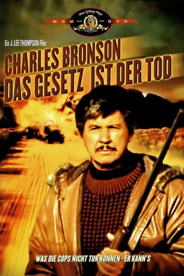

#11078 Das Gesetz ist der Tod
Alternativ: Messenger of Death (Englischer Titel)
 
 IMDB-Wertung: 5.6 / 10
IMDB-Wertung: 5.6 / 10  Metascore: 0
Metascore: 0 
Reporter Garret Smith von der Denver Tribune recherchiert in einem besonders brutalen Mordfall: Eine ganze Mormonen-Familie ist einem Massaker zum Opfer gefallen. Mitglieder der sonst so friedlichen Sekte beschuldigen sich gegenseitig der Tat, und es droht ein regelrechter Glaubenskrieg. Doch Garret findet bald heraus, dass der Mord alles andere als religiöse Motive hatte. Vielmehr sind handfeste wirtschaftliche Interessen im Spiel, und der Mörder ist ganz woanders zu finden, als die Mormonen vermuten.
Jahr: 1988
Dauer: 91 Minuten
FSK: 16
Land: USA Studio: The Cannon GroupTonspuren:
Untertitel:
Auflösung: 1080p (1920x1040) Größe: 7823 MB
Genre: Action, Thriller, Krimi, Mystery
Regisseur: J. Lee Thompson
Drehbuch: Rex Burns, Paul Jarrico
Soundtrack: Robert O. Ragland
Darsteller:
 Charles Bronson als Garret Smith
Charles Bronson als Garret Smith- Trish Van Devere als Jastra Watson
- Laurence Luckinbill als Homer Foxx
 Daniel Benzali als Chief Barney Doyle
Daniel Benzali als Chief Barney Doyle- Marilyn Hassett als Josephine Fabrizio
 Charles Dierkop als Orville Beecham
Charles Dierkop als Orville Beecham Jeff Corey als Willis Beecham
Jeff Corey als Willis Beecham John Ireland als Zenas Beecham
John Ireland als Zenas Beecham- Penny Peyser als Trudy Pike
 Gene Davis als Junior Assassin
Gene Davis als Junior Assassin- John Solari als Senior Assassin
 Jon Cedar als Saul
Jon Cedar als Saul Tom Everett als Wiley
Tom Everett als Wiley- Cheryl Waters als Magda Beecham
- Maria Mayenzet als Esther Beecham
 Kimberly Beck als Piety Beecham
Kimberly Beck als Piety Beecham- Beverly Thompson als Mrs. Lucy Bigelow
- William Phipps als Doc Turner
 Tommy J. Huff als Truck Driver (uncredited)
Tommy J. Huff als Truck Driver (uncredited) Carey Loftin als Truck Driver (uncredited)
Carey Loftin als Truck Driver (uncredited)- Duncan Gamble als Lieutenant Scully
- Bert Williams als Sheriff Yates
- Jerome Thor als Jimmy
- Sydna Scott als Sarah Beecham
- Melanie Noble als Rebecca Beecham
- Patricia Allison als Florinda Beecham
- Sheila Gale Kandlbinder als Ursula Beecham
- Margaret Howell als Naomi Beecham
- Warner Loughlin als Ruth Beecham
- Don Kennedy als Cyrus Pike
- Susan Bjurman als Mrs. Doyle
- John F. McCarthy als Sergeant Purdue
- Phil Zuckerman als Caleb Beecham
- David Cooper als Willis's Follower
- Jeffrey Concklin als Joshua, The Priest
- Jim Bullock als Neighbor
- Erez Yaoz als Party Guest
- Saladin James als Maitre D'
- Enrica Gaspari als Willis's Daughter
- Joseph Darrell als Fund Raiser Contributor
- Menash Benmoshe als Fund Raiser Contributor
- Tarrish Potter als Elizabeth Beecham
- Eric Fry als Timothy Beecham
- Crystal Echeverria Adams als Garret Smith's grandchild (uncredited)
- Trisha Lawson Adams als Garret Smith's grandchild (uncredited)
Datei: X:\1988\Gesetz ist der Tod, Das (1988, FSK16, 1920x1040).mkv seit 24.04.2019
Festplatte: Gemischt-01+Anime
 Es gibt insgesamt 66 Filme in der Gruppe '1988'
Es gibt insgesamt 66 Filme in der Gruppe '1988'